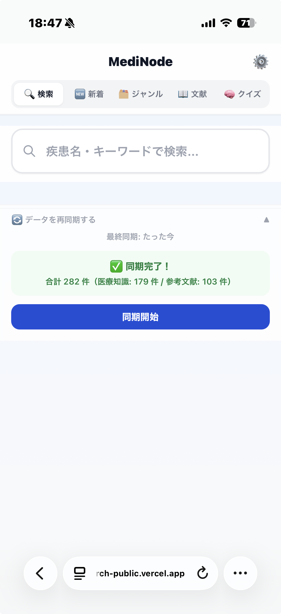
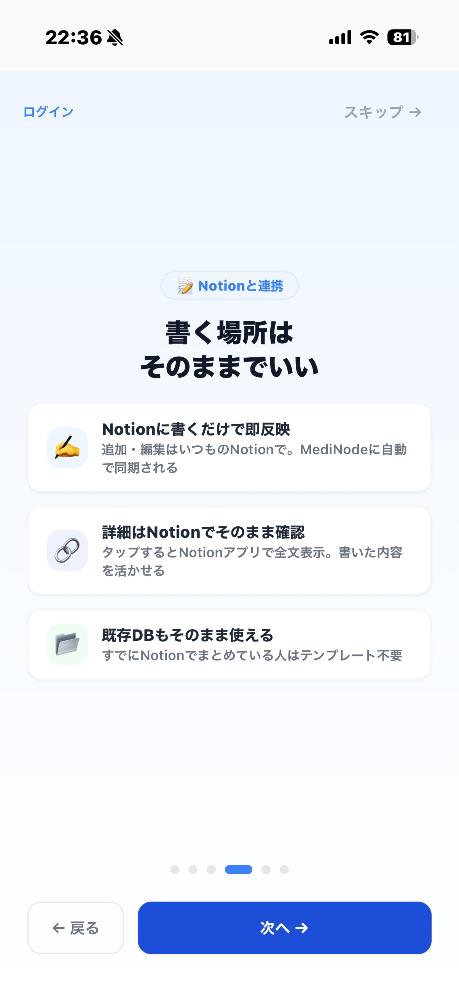
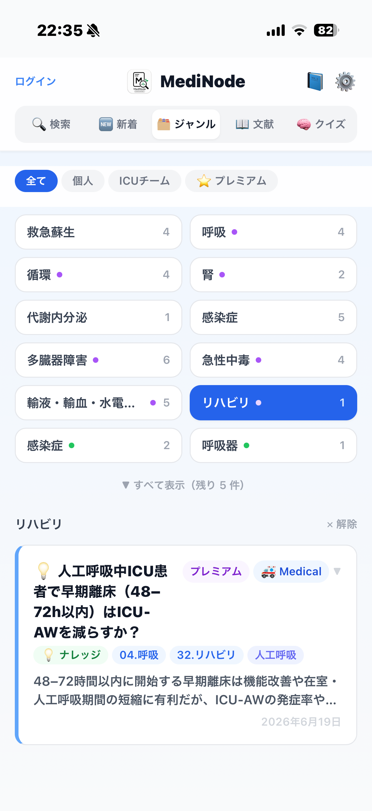
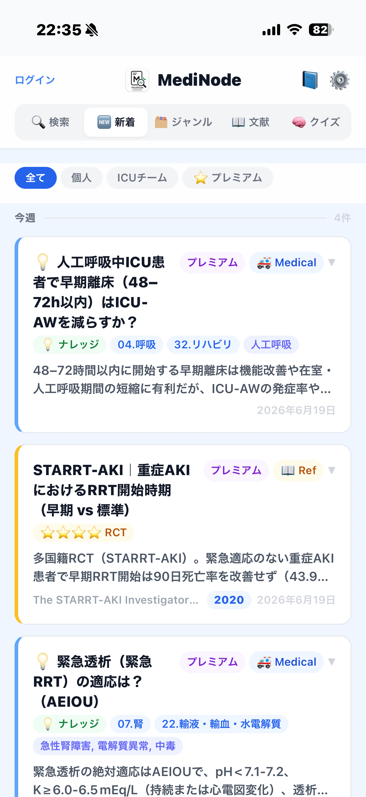
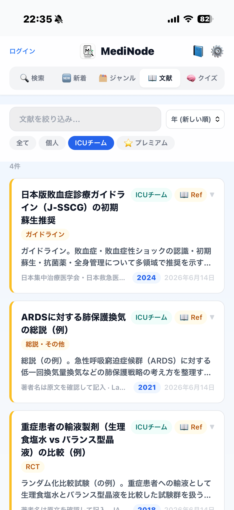
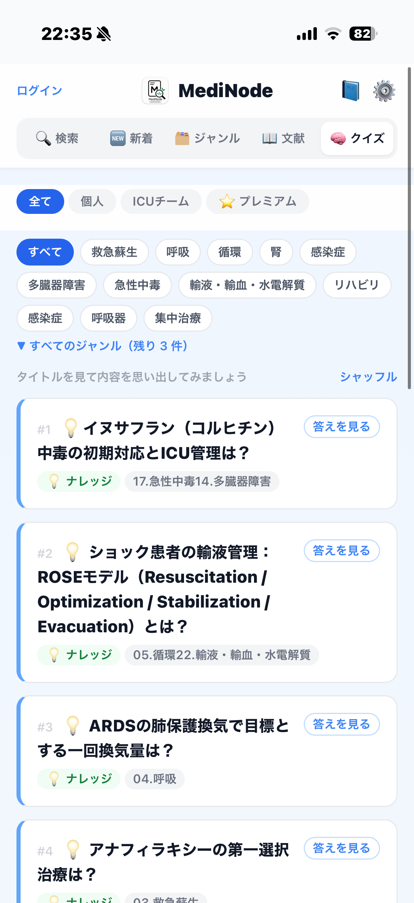

いつものNotionに書いた症例・文献・メモが、スマホ・PCから一瞬で引ける「第二の脳」に。新しく入力し直す手間はゼロ。ためた知識は、そのまま自分専用の一問一答になります。
研修医・看護師・薬剤師・臨床検査技師・学生など、医療者全般に。

「あの時、調べておけばよかった」
一度浮かんだ臨床の疑問は、また同じ場面で戻ってくる。配合変化、腎機能と用量、採血スピッツの順番——。
調べたメモはどこかに散らばり、いざという時に引き出せない。記録用と検索用を二重に書くのも続かない。
MediNodeは新しい入力欄を増やしません。あなたのNotionに繋ぐだけで、記録がそのまま検索データベースとクイズに変わります。
普段使っているNotionのデータベースをMediNodeに接続。新しく書き直す必要はありません。
疾患名・キーワードで横断検索。シンプルモードならNotionを直すと次の検索から即反映されます。
ためたナレッジが、そのままシャッフル出題の一問一答に。自分が集めた知識が、自分専用の問題集になります。

探す・新着・分類・文献・想起。日々の使い方に合わせて、一つの画面ですべてが完結します。さらに、病院・部署で使うなら📋マニュアルタブも。
キーワード検索＋所有者フィルタ（全て／個人／部署／プレミアム）で、必要な知識を一瞬で。
最終更新の新しい順に表示。直近で書いた記録をすぐ確認。
循環・呼吸器・神経・感染症など、ジャンル別にブラウズ。
著者・ジャーナル・発行年・エビデンスレベルで参考文献を管理。
ナレッジがそのままシャッフル出題の一問一答に（最大20問）。




まず試したいならシンプルモード。速度と大量データを求めるならパワーモード。用途で選べます。
Notionを直接検索。追加サービス不要で、Notionを直せば次の検索から即反映されます（表示まで1〜3秒）。
Algoliaに事前同期して、0.1秒以下の爆速検索。日本語の部分一致やジャンル絞り込みも快適です。
調べたことが迷子にならないよう、知識を3つの状態で管理。疑問を一つずつ片づけるたびに、次に迷わない自分が増えていきます。
浮かんだ臨床疑問を、その場で取りこぼさず登録（調査中）。
確認済みの知識に昇格。クイズの出題対象になります。
たまった知識を体系的な解説へ。ジャンルごとに整理。
検索内容やNotionの中身を、サーバーに溜め込みません。安心して日々の知識を預けられます。
設定は端末のローカルにのみ保存。サーバー側に永続保存しません。
検索内容やNotionの中身を蓄積しない設計。プライバシーを尊重します。
スマホのホーム画面に追加すれば、アプリ感覚でいつでも起動できます。
導入・データベース・プレミアムの仕組みを、それぞれのページで一つずつ確認できます。
「医療 × Notion × AI」をテーマに、医療者の学びをラクにする道具を開発・発信しています。MediNodeは、自身の臨床での「あの時調べておけば」をなくすために生まれました。
MediNodeは2026年7月中旬に公開予定です。公開のお知らせはXとnoteで配信します。
公開情報を見る 医療者全般向け・公開までの間もサイトで予習できます